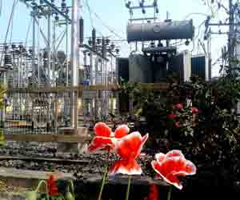
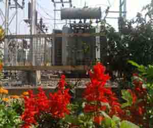

Electrical Power Transformer | Definition and Types of Transformer
Definition of Transformer
A transformer is a static machine used for transforming power from one circuit to another without changing frequency. This is a very basic definition of transformer.
History of Transformer
The history of transformer was commenced in the year 1880. In the year 1950, 400KV electrical power transformer was introduced in high voltage electrical power system. In the early 1970s, unit rating as large as 1100MVA was produced and 800KV and even higher KV class transformers were manufactured in year of 1980.
Use of Power Transformer
Generation of electrical power in low voltage level is very much cost effective. Hence electrical power is generated in low voltage level. Theoretically, this low voltage level power can be transmitted to the receiving end. But if the voltage level of a power is increased, the electric current of the power is reduced which causes reduction in ohmic or I2R losses in the system, reduction in cross sectional area of the conductor i.e. reduction in capital cost of the system and it also improves the voltage regulation of the system. Because of these, low level power must be stepped up for efficient electrical power transmission. This is done by step up transformer at the sending side of the power system network. As this high voltage power may not be distributed to the consumers directly, this must be stepped down to the desired level at the receiving end with the help of step down transformer. These are the uses of electrical power transformer in the electrical power system.

Two winding transformers are generally used where ratio between high voltage and low voltage is greater than 2. It is cost effective to use auto transformer where the ratio between high voltage and low voltage is less than 2. Again three phase single unit transformer is more cost effective than a bank of three single phase transformer unit in a three phase system. But still it is preferable to use than the later where power dealing is very large since such large size of three phase single unit power transformer may not be easily transported from manufacturer's place to work site.
Types of Transformer
Transformers can be categorized in different ways, depending upon their purpose, use, construction etc. The types of transformer are as follows,
- Step Up Transformer & Step Down Transformer - Generally used for stepping up and down the voltage level of power in transmission and distribution power network.
- Three Phase Transformer & Single Phase Transformer - Former is generally used in three phase power system as it is cost effective than later but when size matters, it is preferable to use bank of three single phase transformer as it is easier to transport three single phase unit separately than one single three phase unit.
- Electrical Power Transformer, Distribution Transformer & Instrument Transformer - Transformer is generally used in transmission network which is normally known as power transformer, distribution transformer is used in distribution network and this is lower rating transformer and current transformer & potential transformer, we use for relay and protection purpose in electrical power system and in different instruments in industries are called instrument transformer.
- Two Winding Transformer & Auto Transformer - Former is generally used where ratio between high voltage and low voltage is greater than 2. It is cost effective to use later where the ratio between high voltage and low voltage is less than 2.
- Outdoor Transformer & Indoor Transformer - Transformers that are designed for installing at outdoor are outdoor transformers and transformers designed for installing at indoor are indoor transformers.

 by
by